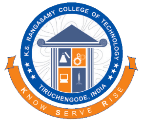
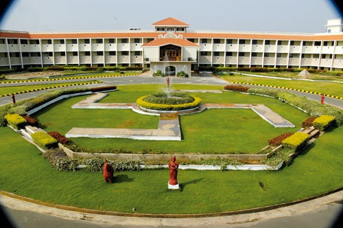

K.S.RANGASAMY COLLEGE OF TECHNOLOGY
The foundation of the K.S.Rangasamy College of Technology was laid in the year 1994, near Tiruchengode, South India. A vital part of the enormous K.S.R. Group of Institutions, it is carving a distinct place for itself under the tutelage of Lion Dr. K. S. Rangasamy.
KSRCT is located in a scenic campus area of over 300 acres with a built-up area of 12 lakh square feet. A combination of cutting edge infrastructure and well-accomplished staff makes it a premier center for learning. In fact, it has the ninth-largest intake of students (as per AICTE approval) among the self-financing engineering colleges in Tamil Nadu.

KSRCT has various cells for student and faculty empowerment. It has signed MoU with leading industries to facilitate industrial exposure for students and faculty and allow in-plant training for students. An actively functioning placement cell has assured a high rate of placement for the passing out candidates.
KSRCT has well-developed facilities for a holistic learning experience. Be it accommodation, sports facilities, library, and other technological amenities, the academy has the best of them all.
A world of excellence awaits you. Step in today and empower yourself at KSRCT.
Address
K.S.Rangasamy College of Technology
KSR Kalvi Nagar
Tiruchengode- 637 215
TamilNadu
India.
K.S.Rangasamy College of Technology
KSR Kalvi Nagar
Tiruchengode- 637 215
TamilNadu
India.
{kind=link}
{kind=link}
{kind=link}